Manual de usuario Canal de ejercicio de derechos sobre datos personales
Ley N° 21.719 · Iniciativa CON012 · Maqueta de validación, versión 5
Solicitante
Unidad de Participación Ciudadana y Transparencia
Elaborado por
Unidad de Información y Análisis (UIA), línea Gobernanza de Datos
Fecha
25-11-2026
Perfiles
Persona solicitante · Unidad Jurídica · Delegado de protección de datos · Director o directora · Área que trata los datos
Maqueta no operacional. Este manual describe una maqueta para validar el flujo y el alcance con la contraparte. Las personas, los RUN, los casos y los responsables que aparecen son ficticios, y nada se envía a un servidor. Lo que todavía no se define aparece en la maqueta como «Por definir».
Contenido
Qué es el canal y qué norma lo rige
Cómo ingresar a la maqueta
Elementos comunes de la pantalla
Persona solicitante
Unidad Jurídica
Delegado de protección de datos
Área que trata los datos
Director o directora
Calendario y reportes
Anexo A · Estados y etapas del caso
Anexo B · Plazos
Anexo C · Definiciones pendientes
Anexo D · Flujos por perfil
1. Qué es el canal y qué norma lo rige
El canal permite que una persona ejerza ante CONAF sus derechos sobre sus datos personales y que CONAF tramite cada solicitud dentro de los plazos legales, con un registro único y trazable. Desde el 01-12-2026 rige la Ley N° 21.719, que modifica la Ley N° 19.628. Las normas que el canal aplica son:
Materia
Qué establece
Artículo
Derechos
Acceso, rectificación, supresión, oposición, portabilidad y bloqueo; los ejerce el titular, su representante legal o mandatario, o sus herederos.
4° a 9°
Derechos ante un órgano público
Acceso, rectificación, oposición y supresión en los casos del art. 22 inc. 3°. No se acogen cuando impidan funciones fiscalizadoras, investigativas o sancionatorias, o afecten un secreto legal. La solicitud se dirige al jefe superior del servicio.
21 y 23
Procedimiento
Solicitud escrita con menciones mínimas; acuse de recibo; respuesta en 30 días corridos, prorrogables una vez por 30; respuesta escrita con respaldo; en la denegación, causa y plazo para reclamar.
11
Bloqueo temporal
Procede con una rectificación, supresión u oposición; debe fundarse; se responde en 2 días hábiles; el rechazo se comunica electrónicamente a la Agencia.
8° ter y 11
Información al público
Lo que CONAF publica en su sitio: política de tratamiento; responsable y representante legal; canales para presentar solicitudes; datos que trata (Catálogo de Datos Personales); política y medidas de seguridad; derecho a reclamar ante la Agencia.
14 ter a) a f)
Reclamo ante la Agencia
30 días hábiles para el titular; CONAF responde en 30 días corridos, prorrogables.
41
Delegado de protección de datos
Designación voluntaria, con autonomía en estas materias. En la maqueta tiene un perfil de seguimiento nacional (reunión del 18-11-2026).
50
Fuente: texto de la Ley N° 21.719 publicado por la Biblioteca del Congreso Nacional, versión con vigencia diferida al 01-12-2026, en los antecedentes del proyecto. La maqueta asume que estas normas se aplican a CONAF; Fiscalía valida ese supuesto y la lectura de las letras del art. 14 ter. La procedencia de la portabilidad ante órganos públicos está por confirmar: los arts. 21 y 23 no la mencionan.
2. Cómo ingresar a la maqueta
La maqueta parte en la pantalla de ingreso. Elija un perfil de la lista: la persona solicitante entra al sitio público simulado de CONAF; los perfiles internos entran sin contraseña. En la versión institucional el acceso interno lo dará el sistema de identidad de CONAF, y la persona solicitante se identificará con Clave Única.
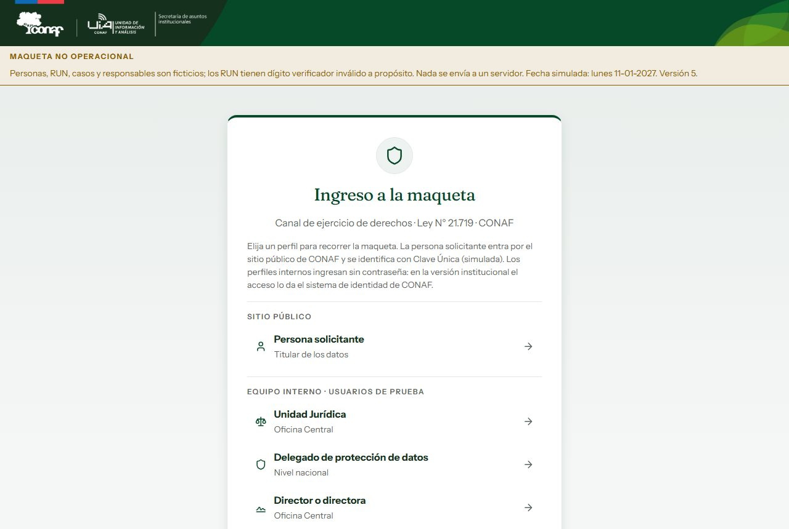
Figura 1. Pantalla de ingreso con los usuarios de prueba, uno por perfil, y la descarga de este manual.
Para cambiar de perfil, use «Cambiar de perfil» en la barra superior. Cada cambio vuelve a la pantalla de ingreso; lo que se hizo en la sesión se conserva mientras no se recargue la página.
Usuarios de prueba
Perfil
Cuenta de prueba
Alcance en la maqueta
Persona solicitante
Sin nombre en pantalla
Sitio público y sus propias solicitudes
Unidad Jurídica
Una cuenta por sede
Su sede: recibe y registra, resuelve la admisibilidad y el bloqueo, deriva, hace la revisión jurídica (V°B°), responde y atiende los reclamos; asigna responsables, plazos internos y feriados; ve reportes y la trazabilidad completa de su sede
Delegado de protección de datos
Una cuenta nacional
Todas las sedes, sólo lectura: panel de alertas por sede, casos, calendario, reportes y bitácora; no tramita
Director o directora
Una cuenta por sede
Su sede: revisa y firma sólo los casos que le toca firmar; no deriva; sin bitácora
Área que trata los datos
Una cuenta por sede
Su sede: analiza los ámbitos de datos (personal y ex funcionarios · Áreas Silvestres Protegidas, entre otros); sólo los casos en su etapa de análisis, sin bitácora
Unidad Jurídica, Director y Área que trata los datos tienen una cuenta de prueba por sede: el ingreso entra a Oficina Central; las cuentas de cada región se usan en las pruebas. En la maqueta los usuarios aparecen por su perfil, sin nombre de persona. Pendiente: quién ocupa cada cuenta en las sedes reales. Las asignaciones de responsables son de prueba.
3. Elementos comunes de la pantalla
Banner y franja. Arriba va el banner institucional y la franja «Maqueta no operacional» con la fecha simulada (lunes 11-01-2027).
Barra. Muestra el nombre del canal, el perfil activo, la sede y «Cambiar de perfil». La maqueta se muestra siempre en tema claro. Un toque en «Datos Personales» vuelve al inicio.
Inicio por perfil. Cada perfil parte en una pantalla con tarjetas «¿Qué necesitas hacer?». El número de cada tarjeta indica cuántos casos esperan; en rojo, los urgentes.
Panel del caso. Al abrir un caso se despliega un panel lateral con su etapa, los avisos, las acciones que le corresponden al perfil, la solicitud, los plazos y la bitácora. Se cierra con «Cerrar» o con la tecla Esc.
Estados. Cada estado se muestra con un símbolo, una etiqueta y un color, para que se entienda aunque no se distinga el color: ● con holgura (10 días o más), ! esta semana (3 a 9 días), ▲ urgente (2 días o menos), ✕ vencido, ✓ cerrado.
Datos personales en pantalla. El RUN se muestra enmascarado. Sólo la Unidad Jurídica puede ver el RUN completo, y esa lectura queda registrada en la bitácora.
4. Persona solicitante
Quién es: el titular de los datos, su representante legal o mandatario, o un heredero del titular fallecido (art. 4°).
Qué hace: consulta la información que publica CONAF, presenta solicitudes, recibe el acuse con número de caso, consulta el avance y aporta los antecedentes que se le pidan.
4.1 Página de datos personales
La persona entra directamente a la página de protección de datos personales. Cómo se llega a ella desde conaf.cl es una definición de SECOM y de Informática, que está pendiente. La página muestra las letras a) a f) del art. 14 ter con su estado: lo confirmado y lo que está por aprobar, revisar o publicar. La letra d) remite al Catálogo de Datos Personales de CONAF, que incluye el período de conservación, la fuente de los datos, las transferencias internacionales y las decisiones automatizadas.
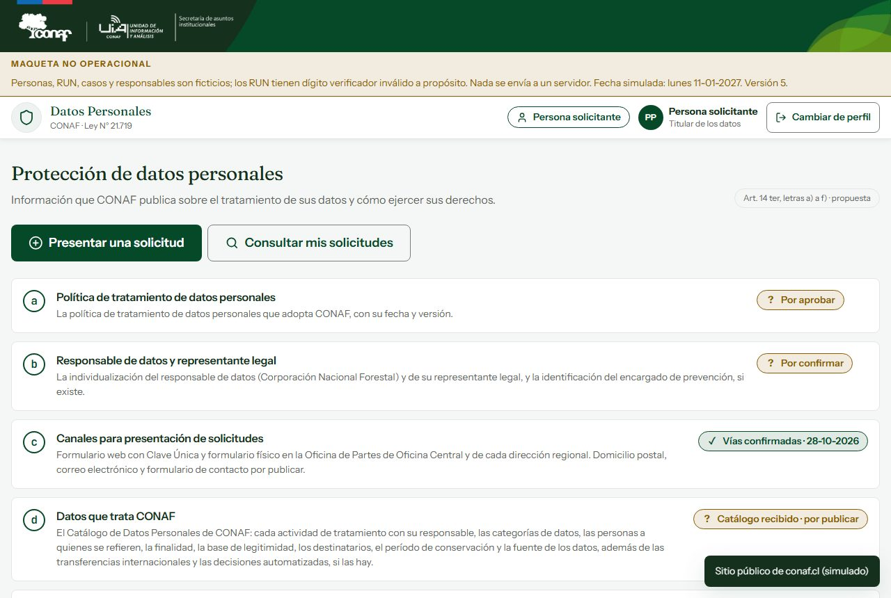
Figura 2. Página de protección de datos personales: contenidos del art. 14 ter, letras a) a f).
4.2 Presentar una solicitud
Al pulsar «Presentar una solicitud» o «Consultar mis solicitudes», la maqueta pide la identificación con Clave Única (simulada) y luego continúa con el trámite elegido. Ver el estado de las propias solicitudes también requiere Clave Única.
Pulse «Presentar una solicitud».
Paso 1 · Quién solicita. Indique si es el titular, su representante o un heredero. Ya se identificó con Clave Única al elegir el trámite. El representante adjunta poder notarial; no se acepta poder simple. El heredero acredita su calidad.
Paso 2 · Qué pide. Marque uno o más derechos y describa qué información pide y dónde cree que consta: es obligatorio. El bloqueo temporal acompaña a una rectificación, supresión u oposición y debe fundarse.
Paso 3 · Cómo recibe la respuesta. Correo electrónico, carta al domicilio (región, provincia y comuna) o retiro en una Oficina de Partes. El correo es obligatorio: ahí llega el acuse.
Paso 4 · Revisar y enviar. Revise el resumen y los plazos, marque la declaración y pulse «Enviar solicitud».
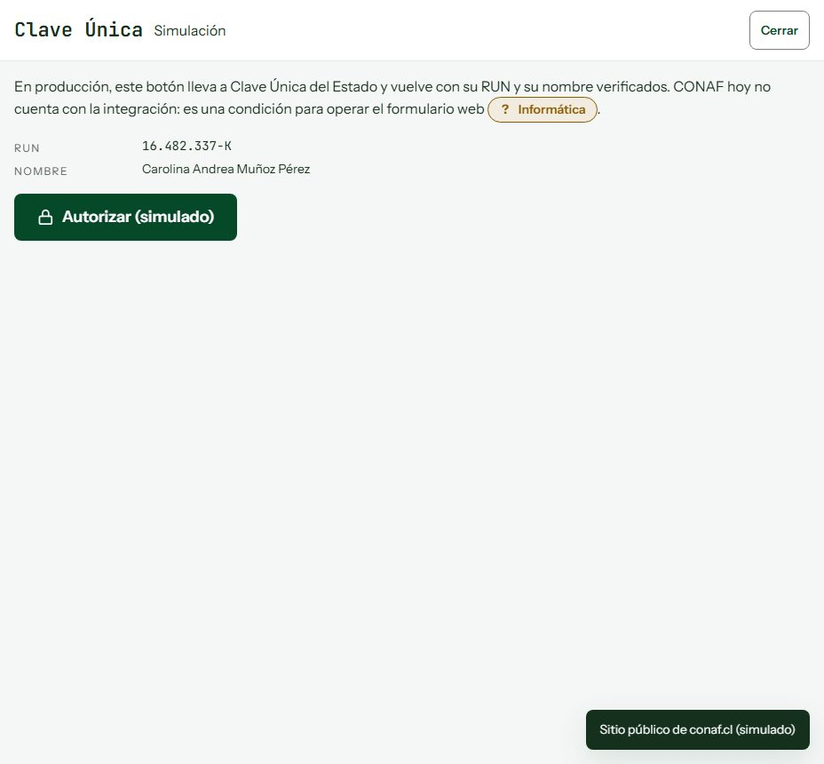
Figura 3. Identificación con Clave Única (simulación). CONAF hoy no cuenta con la integración.
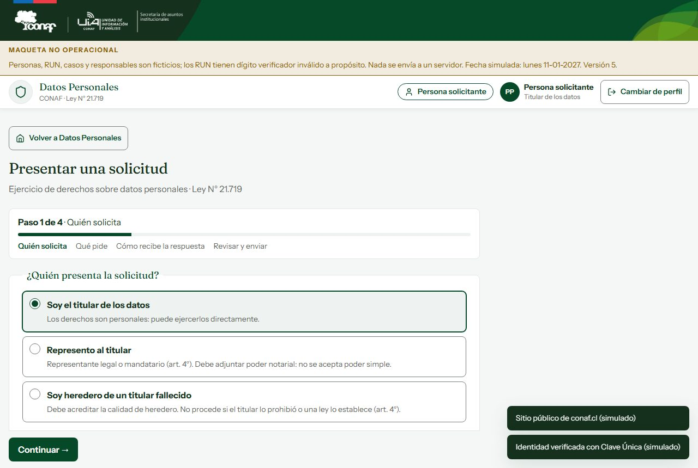
Figura 4. Paso 1: calidad de quien solicita e identificación.
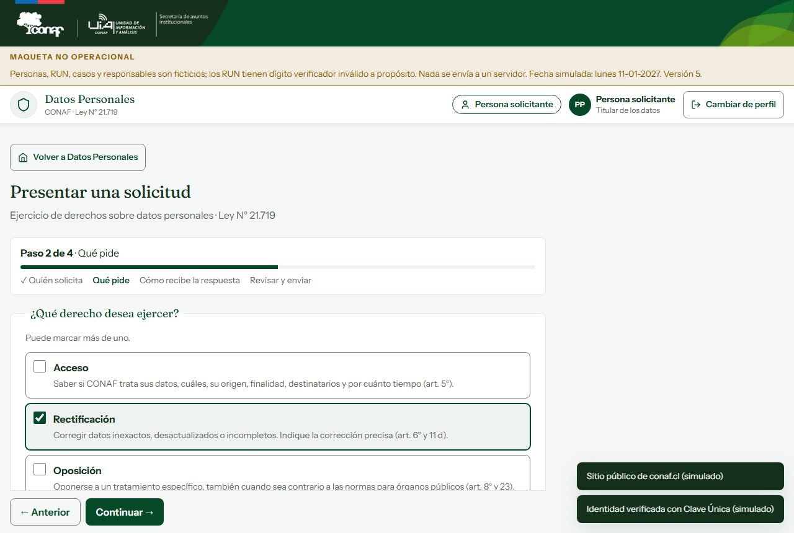
Figura 5. Paso 2: derechos, detalle obligatorio y fundamento del bloqueo.
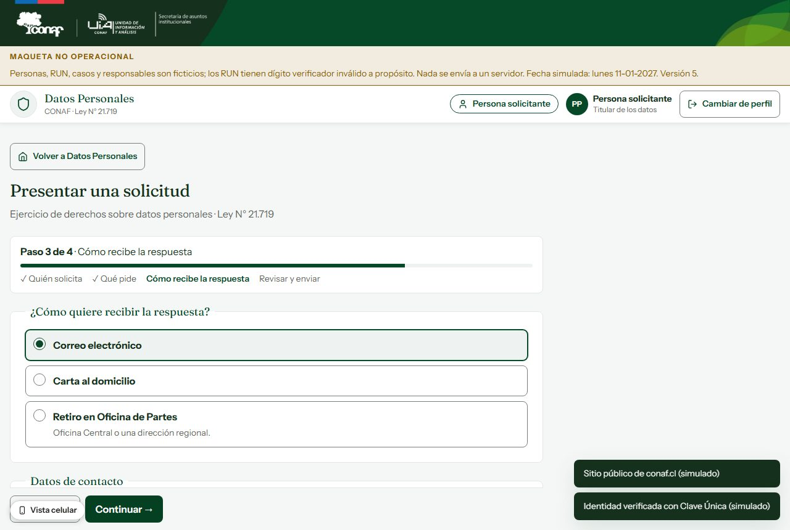
Figura 6. Paso 3: medio de respuesta y contacto.
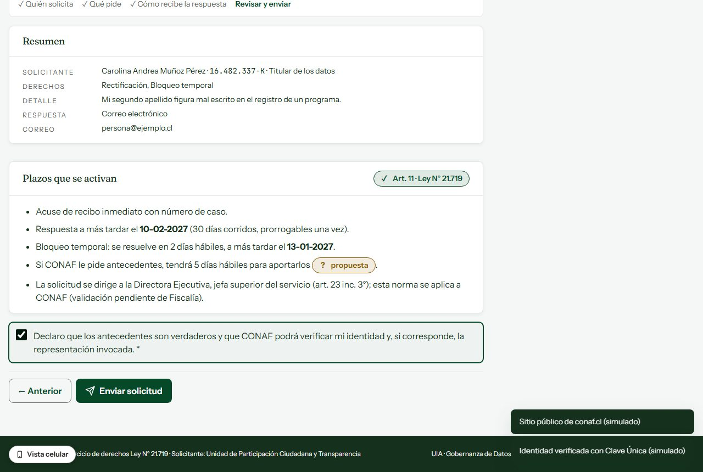
Figura 7. Paso 4: resumen, plazos que se activan y declaración.
Si falta algo, la maqueta lo indica en un recuadro rojo al inicio del paso y no avanza.
4.3 Acuse y consulta de estado
Al enviar, la maqueta muestra el número de caso y la fecha límite de respuesta: 30 días corridos desde el ingreso. El acuse llega también al correo de la persona, porque desde ese momento corren los plazos. En «Mis solicitudes» la persona ve el avance de cada caso en cinco pasos (recibida, admisibilidad, en análisis, respuesta en preparación y respondida) y, si CONAF le pidió antecedentes, los envía desde ahí.
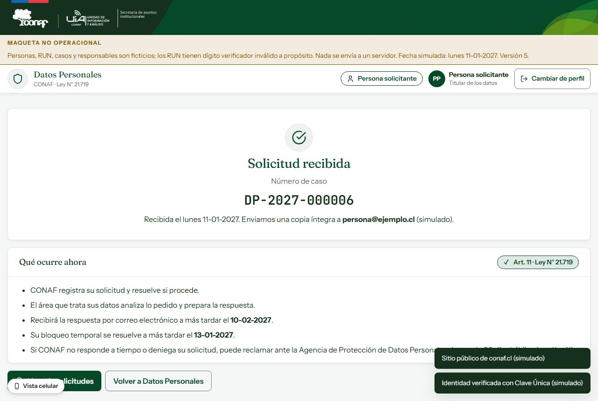
Figura 8. Acuse de recibo con número de caso.
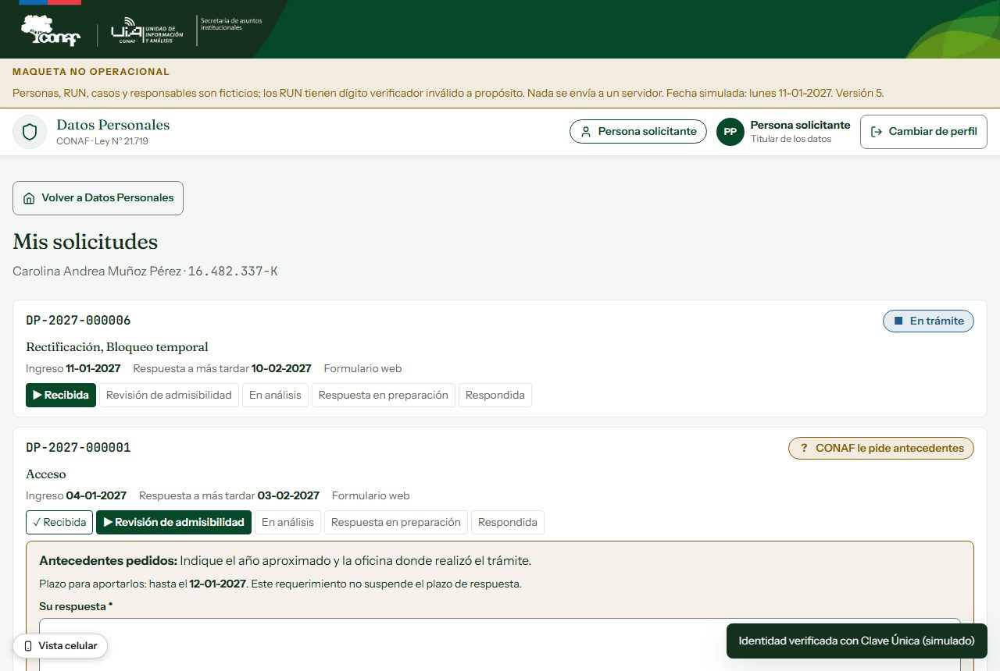
Figura 9. Mis solicitudes: avance de cada caso y envío de antecedentes pedidos.
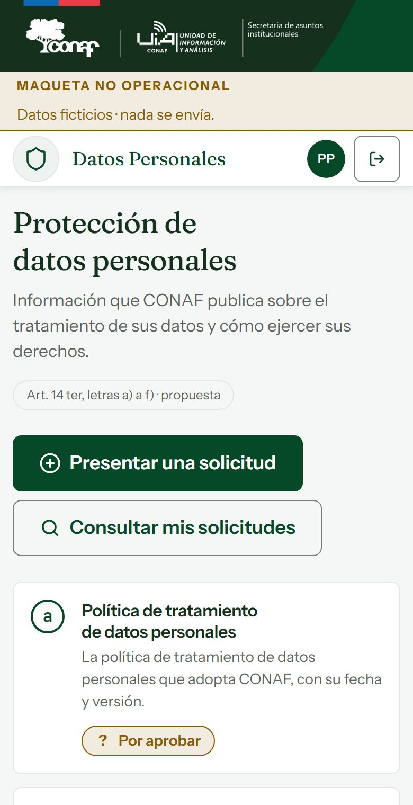
Figura 10. La página de datos personales en un teléfono.
5. Unidad Jurídica
Quién es: la Unidad Jurídica de cada sede, con una cuenta por sede. Desde la reunión con la contraparte del 18-11-2026 asume también las funciones del Encargado de Gestión: la solicitud llega directamente al abogado de la sede, que resuelve la admisibilidad y la deriva. Ve la trazabilidad completa de los casos de su sede.
Qué hace: registra las solicitudes, incluidas las que llegan en formulario físico a la Oficina de Partes; verifica identidad y representación; resuelve el bloqueo temporal y la admisibilidad; deriva al Área que trata los datos; da el visto bueno jurídico (V°B°) a la propuesta; prorroga; envía la respuesta firmada y cierra; responde los reclamos que notifique la Agencia. Además administra la configuración del canal.
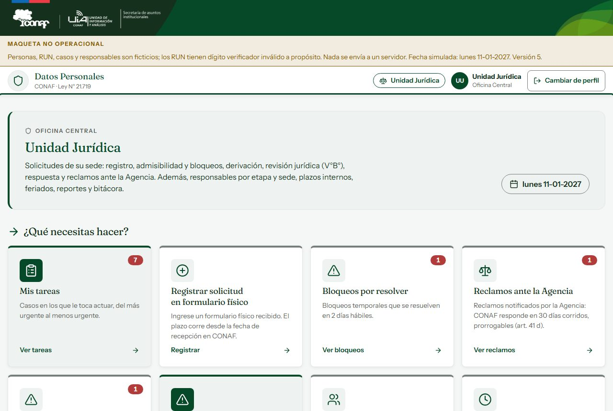
Figura 11. Inicio de la Unidad Jurídica.
El flujo conserva sus etapas: la misma cuenta pasa el caso por recepción, admisibilidad, derivación, revisión jurídica y cierre. Supuesto por confirmar: el formulario físico que llega a la Oficina de Partes de una región lo registra la Unidad Jurídica de esa sede.
5.1 Mis tareas y casos
«Mis tareas» lista los casos en los que le toca actuar, del más urgente al menos urgente. Los filtros separan los casos por grupo (abiertos, bloqueo pendiente, requieren antecedentes, sin responsable, vencidos, reclamos, cerrados), vía, derecho y sede.
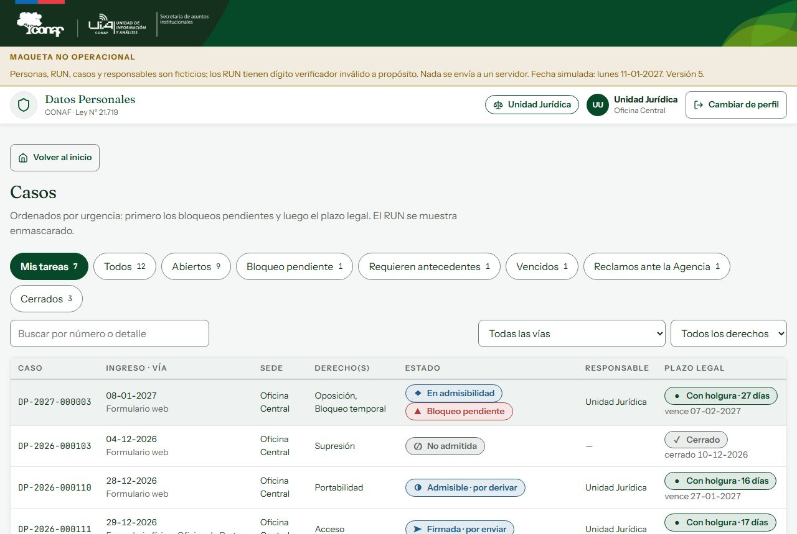
Figura 12. Lista de casos con filtros y plazo legal.
5.2 Recepción y registro
Abra el caso. Si la identidad no está verificada, marque «Identidad verificada» (Clave Única, cédula exhibida en Oficina de Partes o copia acompañada).
Pulse «Pasar a admisibilidad». Si faltan antecedentes, use «Pedir antecedentes» y escriba qué se pide.
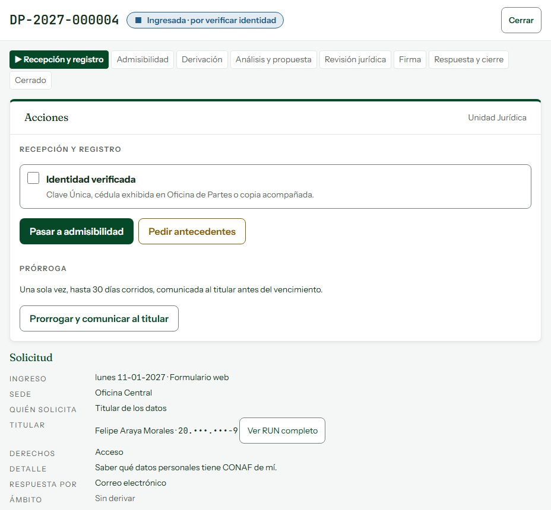
Figura 13. Panel del caso en recepción.
5.3 Registrar un formulario físico de Oficina de Partes
Use la tarjeta «Registrar solicitud en formulario físico». Indique la fecha de recepción en CONAF, el número de registro, quién solicita (titular, representante con poder notarial o heredero), los derechos, el detalle y el medio de respuesta, y marque que adjuntó el documento original digitalizado. La Oficina de Partes es la de su sede. El plazo legal corre desde la fecha del timbre, no desde el registro. Si la cédula no viene, el caso queda en «Requiere antecedentes».
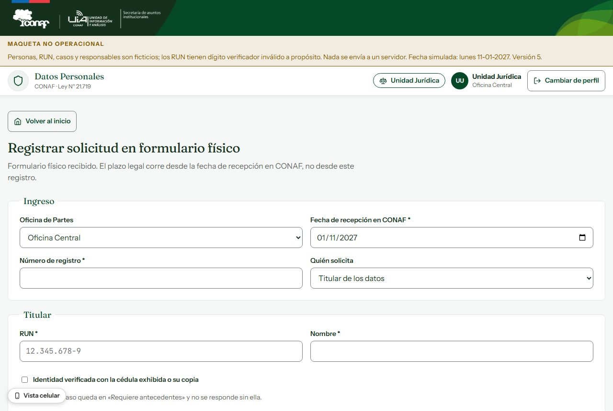
Figura 14. Registro de una solicitud recibida en Oficina de Partes.
5.4 Bloqueo temporal
Los bloqueos pendientes aparecen primero. Se resuelven en 2 días hábiles desde la recepción. Para rechazar, el fundamento es obligatorio, y la maqueta registra la comunicación electrónica del rechazo a la Agencia (art. 11).
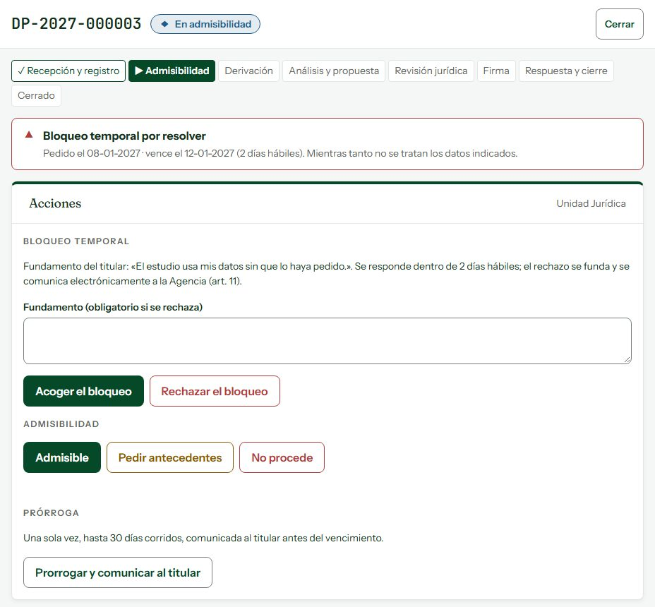
Figura 15. Resolución de un bloqueo temporal.
5.5 Admisibilidad
Declare la solicitud admisible, pida antecedentes o indique que no procede con su causal y fundamento (por ejemplo, las del art. 23 inc. 2°). Si los antecedentes pedidos no llegaron a tiempo, puede denegar por esa razón.
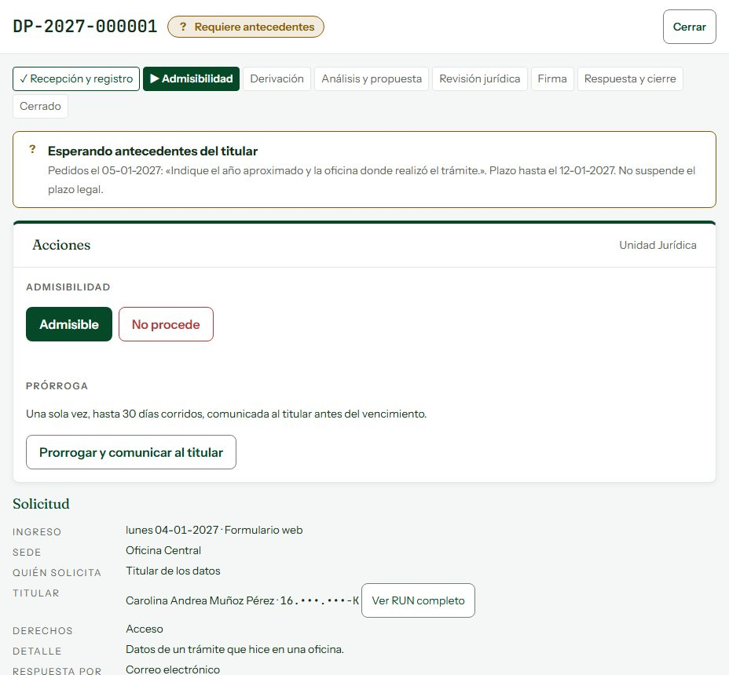
Figura 16. Admisibilidad con antecedentes pedidos al titular.
5.6 Derivar al Área que trata los datos
Con la solicitud admisible, elija el ámbito que trata los datos y pulse «Derivar». Los ámbitos de la maqueta son de ejemplo hasta cargar el Catálogo de Datos Personales.
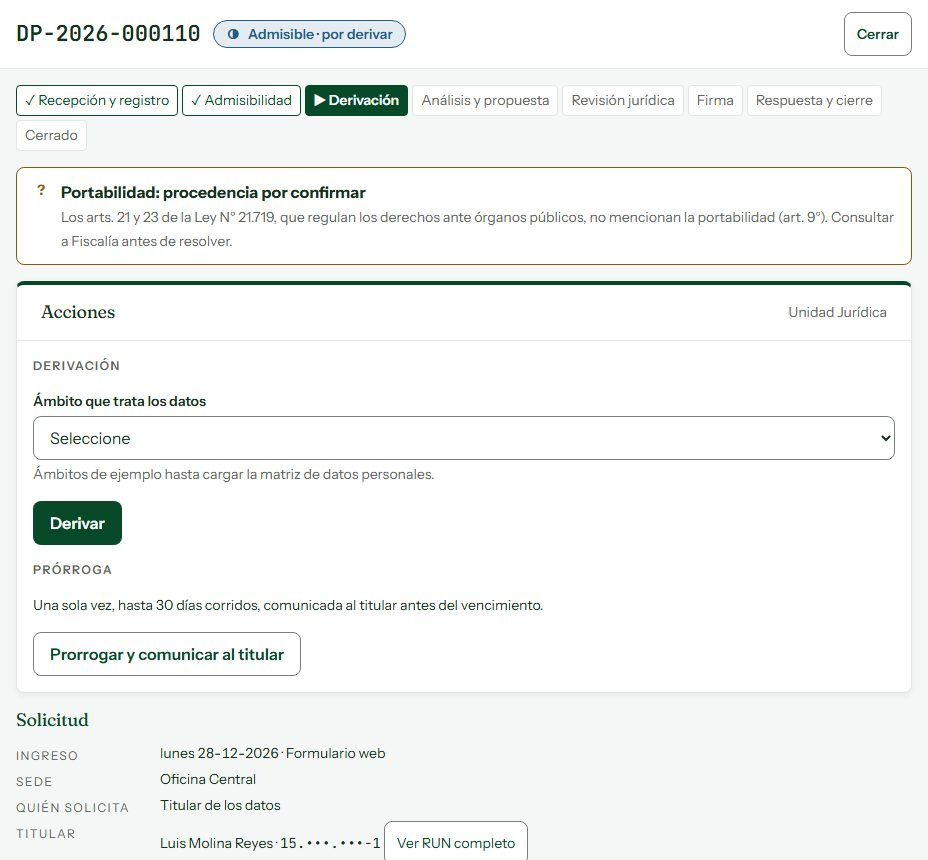
Figura 17. Derivación al Área que trata los datos.
5.7 Revisión jurídica
Revise la propuesta del Área. Pulse «Conforme · pasa a firma» o devuélvala con observaciones, que son obligatorias.
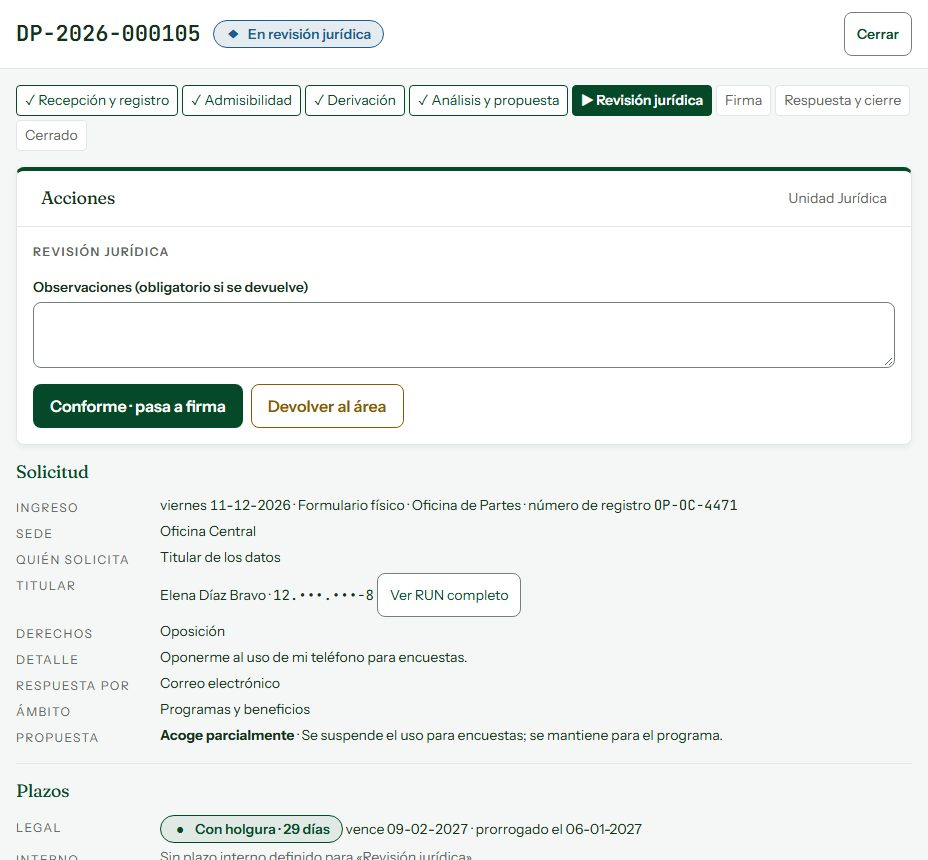
Figura 18. Revisión jurídica de la propuesta.
5.8 Prorrogar, responder y cerrar
Prorrogar: una sola vez, hasta 30 días corridos, comunicando al titular antes del vencimiento. Si el plazo ya venció, la maqueta no lo permite. El Área puede pedir la prórroga desde su panel.
Responder y cerrar: la carta de respuesta se firma y se emite por Cero Papel; el canal registra el flujo. Con la respuesta firmada, pulse «Enviar la respuesta y cerrar». Si se acogió una rectificación, supresión u oposición, indique si se comunicaron los cambios a quienes se cedieron los datos (art. 6° y 11).
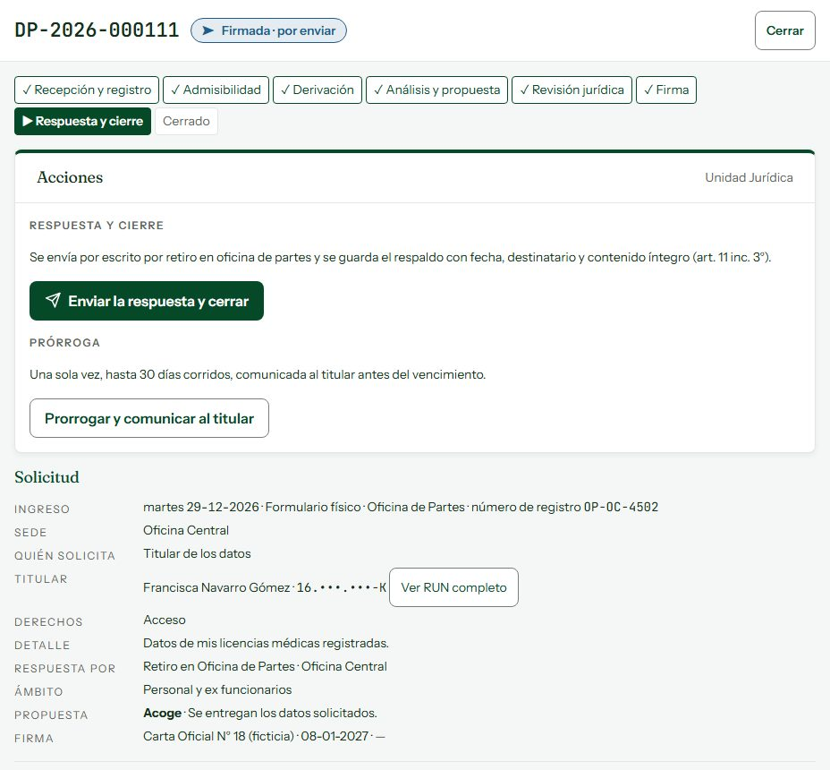
Figura 19. Envío de la respuesta firmada y cierre.
5.9 Reclamos ante la Agencia
Cuando la Agencia notifica un reclamo, regístrelo con su fecha y folio. CONAF responde en 30 días corridos desde la notificación, prorrogables una vez por el mismo plazo (art. 41 d). Registre la respuesta enviada para cerrar el reclamo.
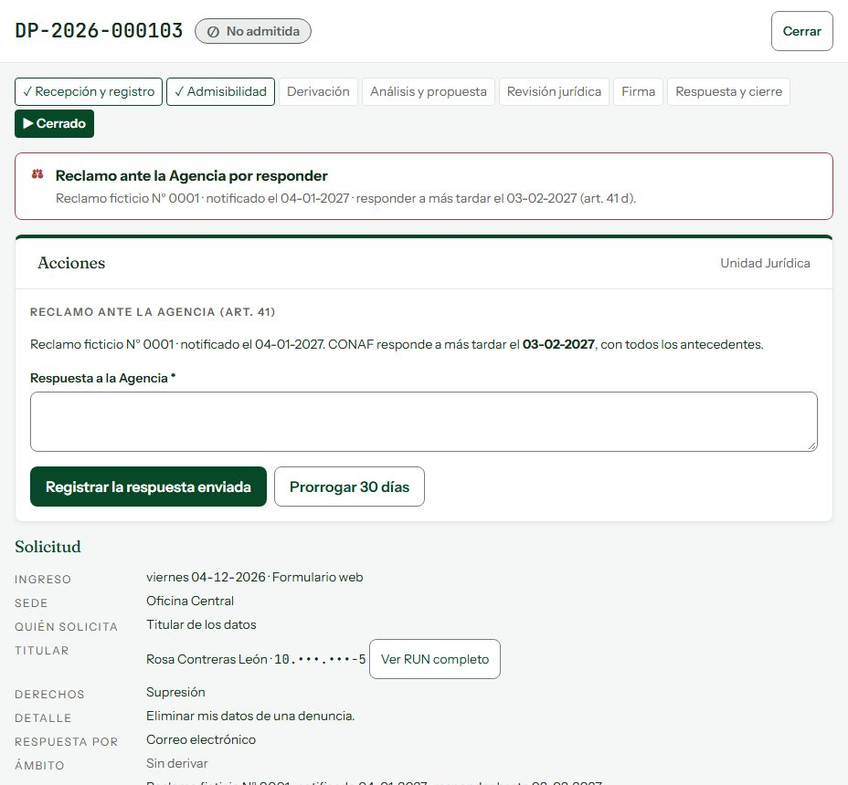
Figura 20. Reclamo ante la Agencia por responder.
5.10 Reporte de vulneraciones (art. 14 sexies)
La Unidad Jurídica prepara el reporte de vulneraciones de las medidas de seguridad. El plazo y el medio de envío a la Agencia quedan pendientes de la validación de Fiscalía. La maqueta no simula ese reporte.
5.11 Responsables por etapa y sede
La tabla tiene una fila por sede (Oficina Central y las 16 direcciones regionales) y una columna por etapa: recibe y registra, admisibilidad y bloqueo, deriva, análisis y propuesta, revisión jurídica, firma, responde y cierra, y reclamos ante la Agencia. Toque una celda para asignar a un usuario del perfil que hace esa etapa: la Unidad Jurídica en todas, salvo el análisis (Área que trata los datos) y la firma (Director o directora). Un caso cuya etapa no tiene responsable queda detenido y aparece en «Casos sin responsable». Debajo se listan los ámbitos de datos.
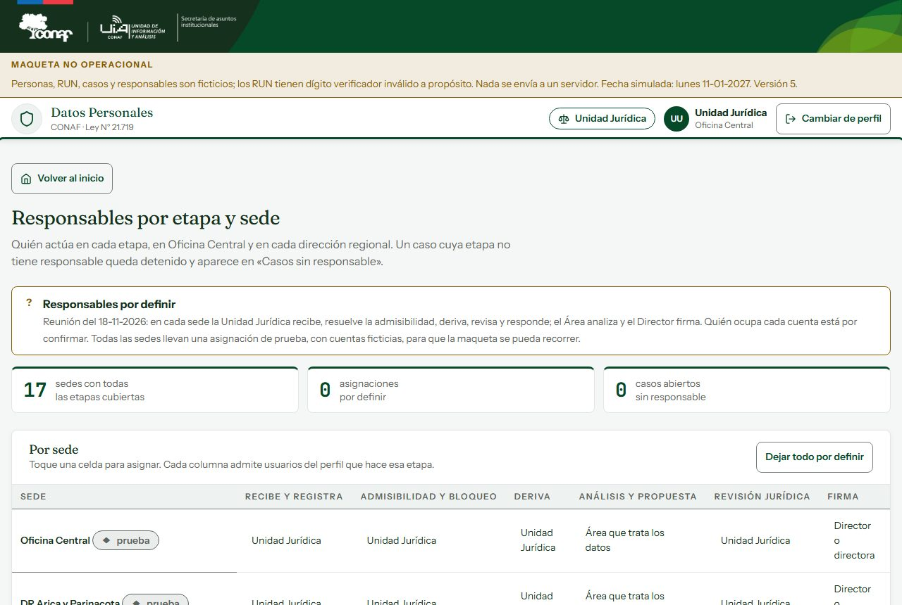
Figura 21. Responsables por etapa y sede.
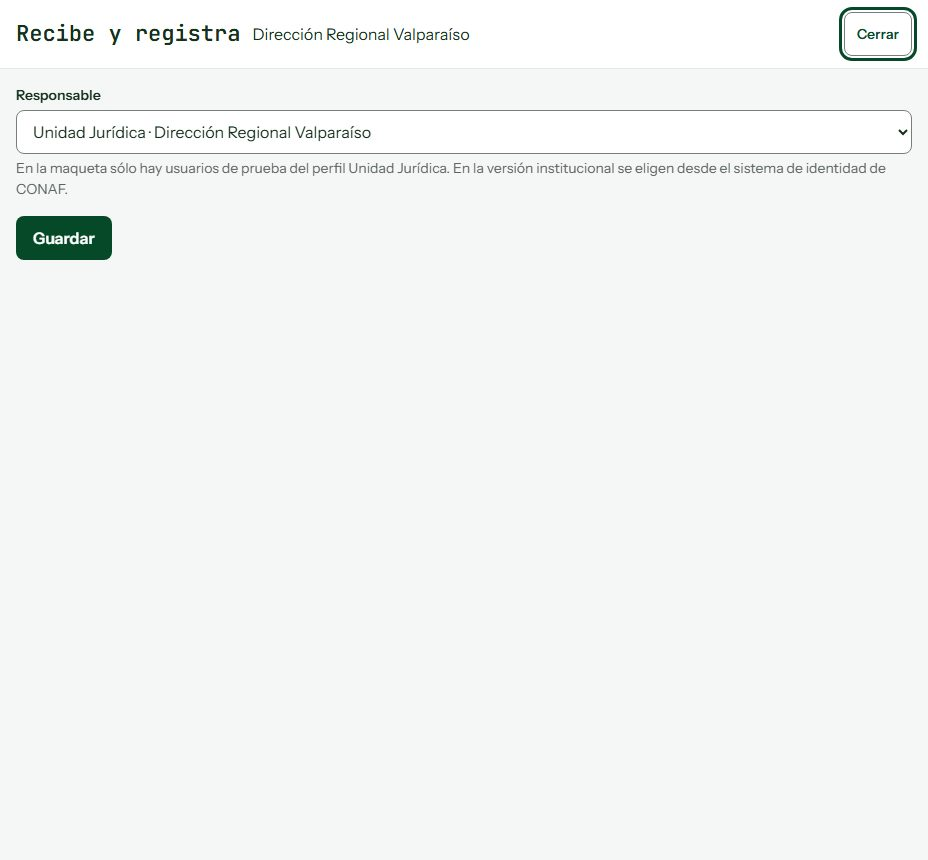
Figura 22. Asignación de un responsable.
5.12 Plazos internos y feriados
Los plazos internos por etapa quedan vacíos hasta que la contraparte los defina; mientras tanto el canal controla sólo los plazos legales, que no se editan. Los feriados se descuentan de los días hábiles.
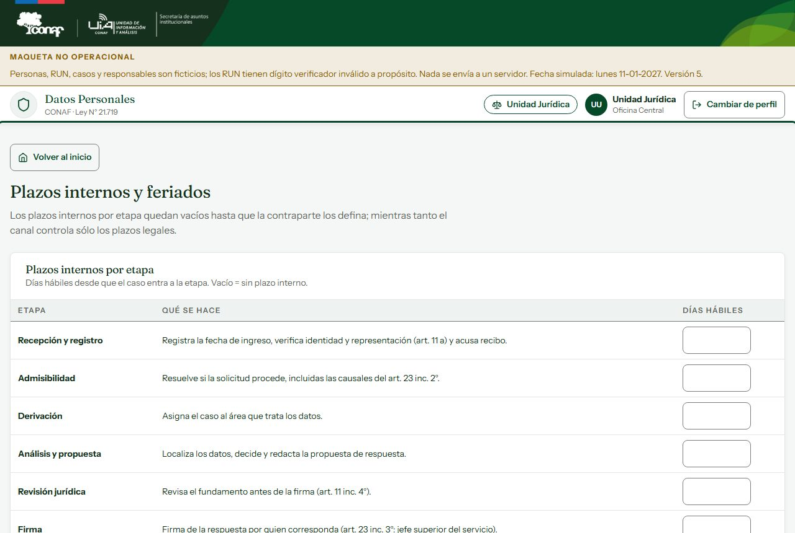
Figura 23. Plazos internos, plazos legales y feriados.
5.13 Bitácora del canal
Registra las acciones sobre los casos y la configuración del canal. La Unidad Jurídica ve la de su sede y el delegado, la de todas las sedes. El Director y el Área que trata los datos no la ven.
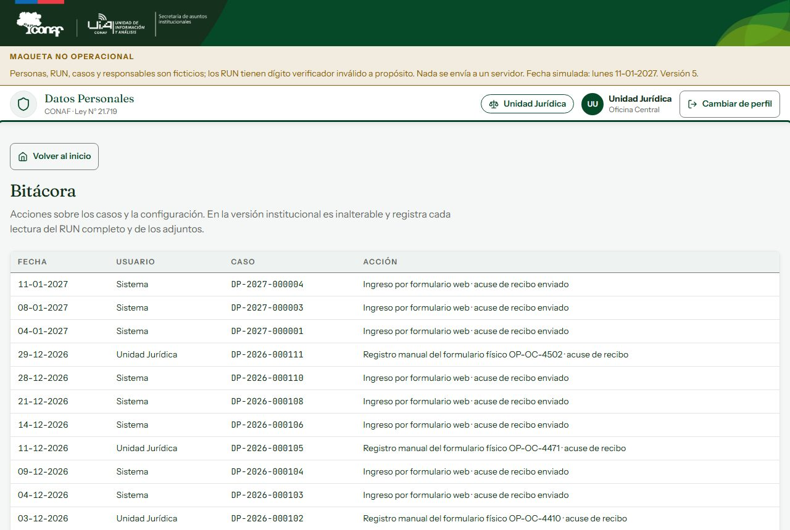
Figura 24. Bitácora del canal.
6. Delegado de protección de datos
Quién es: el delegado de protección de datos de CONAF, con una sola cuenta para todas las sedes. Se incorporó en la reunión del 18-11-2026 para fiscalizar que el flujo se cumpla y que se respondan los plazos.
Qué hace: sigue las solicitudes de todas las sedes, detecta las que se acercan a su vencimiento y avisa a la Unidad Jurídica de la sede para que responda. No tramita casos ni ve el RUN completo.
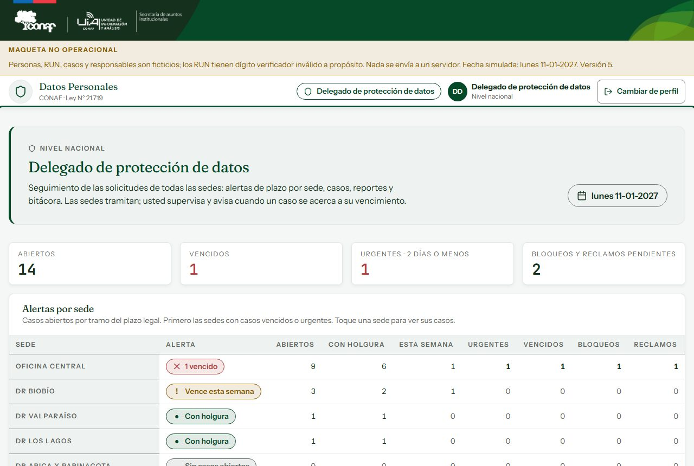
Figura 25. Inicio del delegado: cifras nacionales y alertas por sede.
6.1 Alertas por sede
El panel cuenta, por sede, los casos abiertos según el tramo del plazo legal: con holgura, esta semana, urgentes y vencidos, más los bloqueos y los reclamos pendientes. Primero aparecen las sedes con casos vencidos o urgentes. Al tocar una sede se abre la lista de sus casos abiertos. En el teléfono, cada sede es una tarjeta con su alerta y sus cifras. Si además se le avisa por correo está por definir.
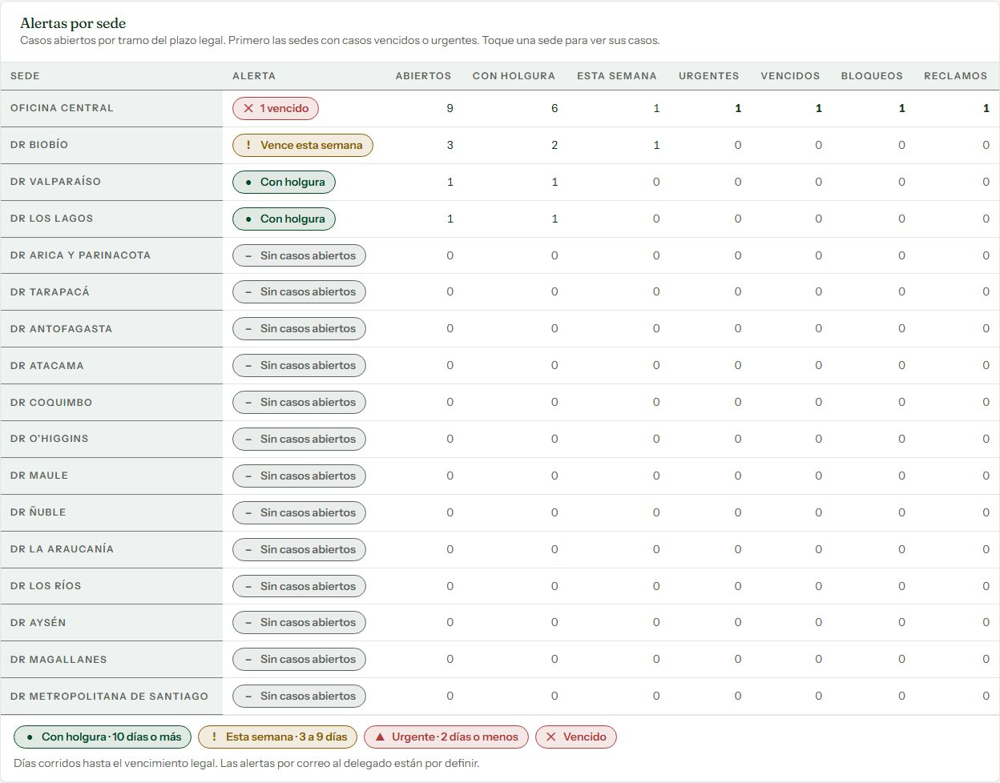
Figura 26. Alertas por sede.
6.2 Casos, reportes y bitácora
El delegado ve todos los casos de todas las sedes, con sus avisos, plazos y bitácora, pero el panel del caso no le ofrece acciones. También tiene el calendario de vencimientos, los reportes nacionales con su planilla Excel y la bitácora de todas las sedes.
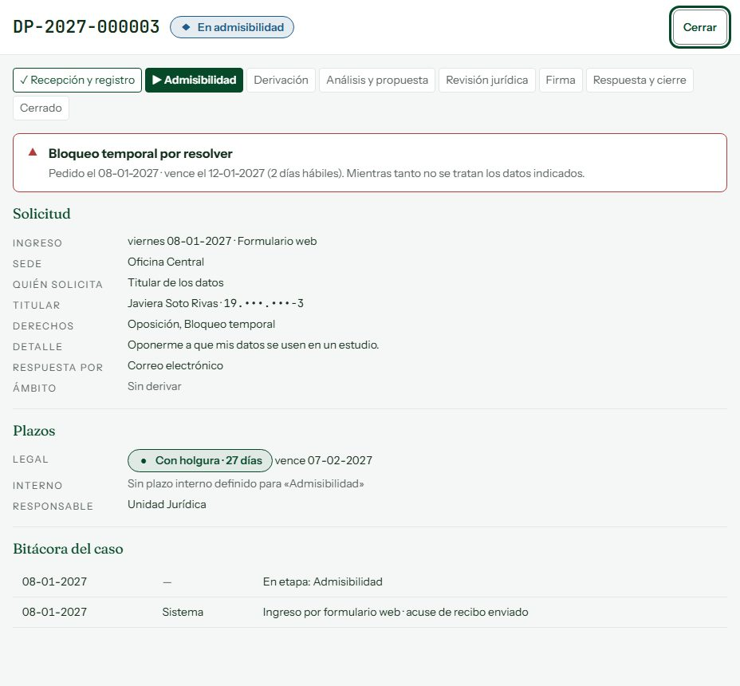
Figura 27. Un caso visto por el delegado: sólo lectura.
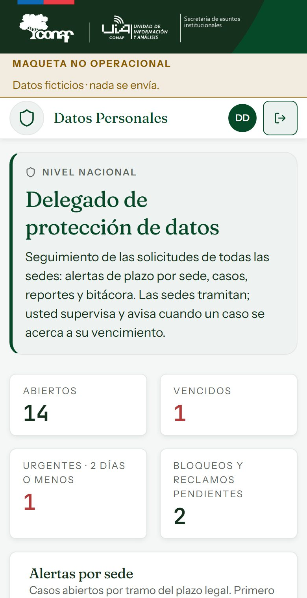
Figura 28. El inicio del delegado en un teléfono.
7. Área que trata los datos
Quién es: el Área que trata los datos de cada sede, con una cuenta por sede que atiende los ámbitos de datos de esa sede. Los ámbitos saldrán del Catálogo de Datos Personales.
Qué hace: localiza los datos, decide (acoge, acoge parcialmente o rechaza), redacta la propuesta de respuesta y la envía a revisión jurídica. Puede pedir prórroga a la Unidad Jurídica. Ve sus casos sólo cuando le toca la etapa de análisis de sus ámbitos, sin la bitácora.
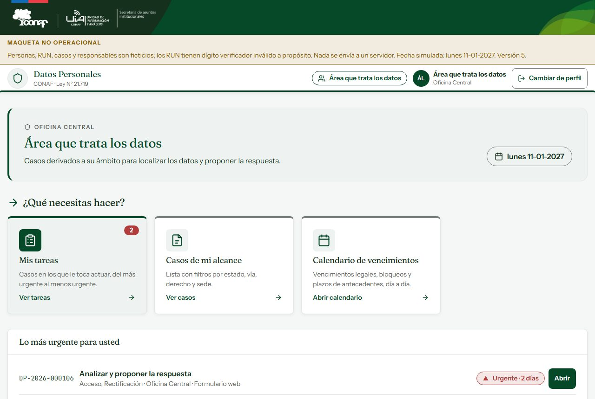
Figura 29. Inicio del Área que trata los datos.
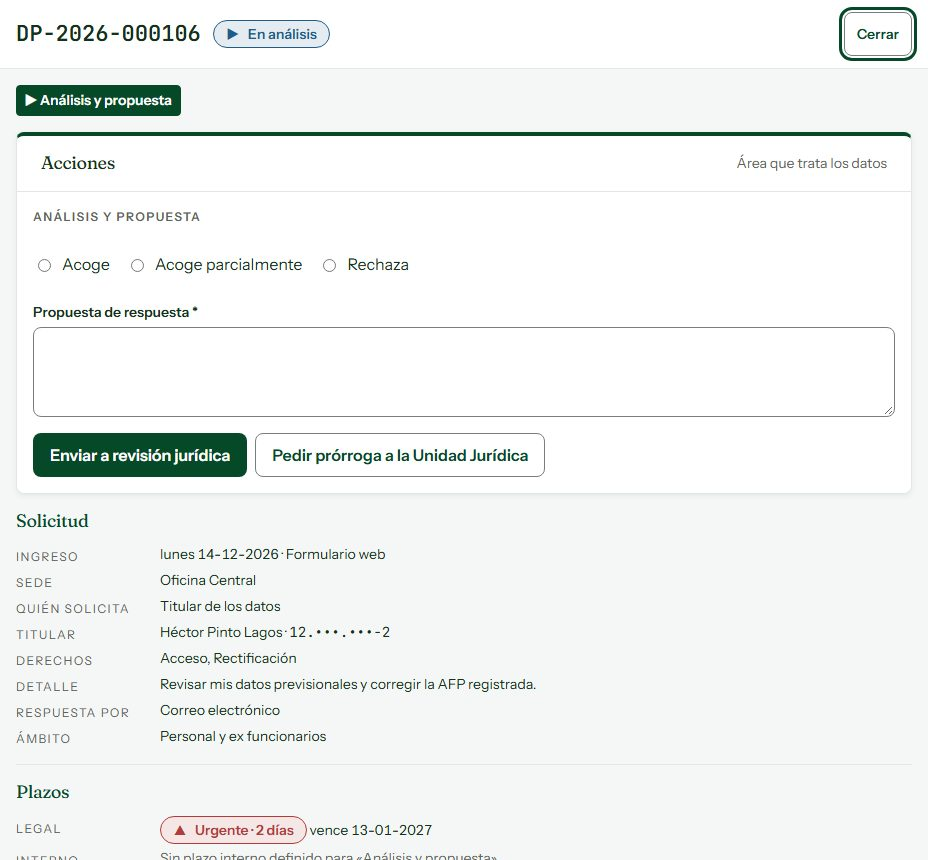
Figura 30. Análisis y propuesta de respuesta.
8. Director o directora
Quién es: la Directora Ejecutiva en Oficina Central y los directores regionales, con una cuenta por sede, que firma las respuestas de su sede. La ley dirige la solicitud al jefe superior del servicio (art. 23 inc. 3°). La respuesta se firma y se emite por Cero Papel; en el canal se registra el número del documento.
Qué hace: revisa la respuesta y la firma. No deriva ni registra solicitudes. Ve sólo los casos que le toca firmar, sin la bitácora.
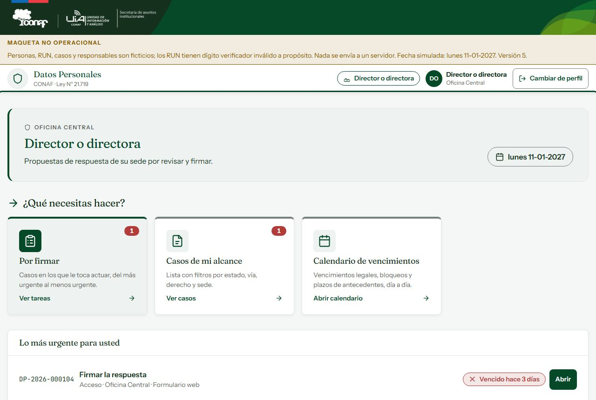
Figura 31. Inicio del director: respuestas por firmar.
En una denegación total o parcial, la maqueta recuerda que la respuesta debe indicar la causa, los antecedentes y el plazo de 30 días hábiles para reclamar ante la Agencia (art. 11 inc. 4°). Escriba el número del documento y pulse «Firmar la respuesta».
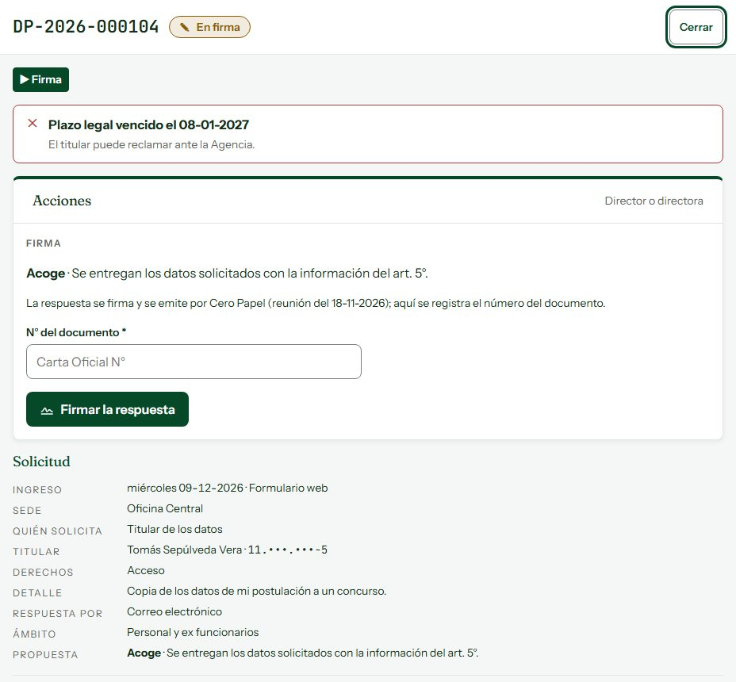
Figura 32. Firma de la respuesta.
9. Calendario y reportes
El calendario muestra, día a día, los vencimientos legales, los bloqueos, los plazos de antecedentes y, si se definen, los plazos internos de los casos que ve cada perfil. En el teléfono se muestra como agenda con sólo los días que tienen vencimientos.
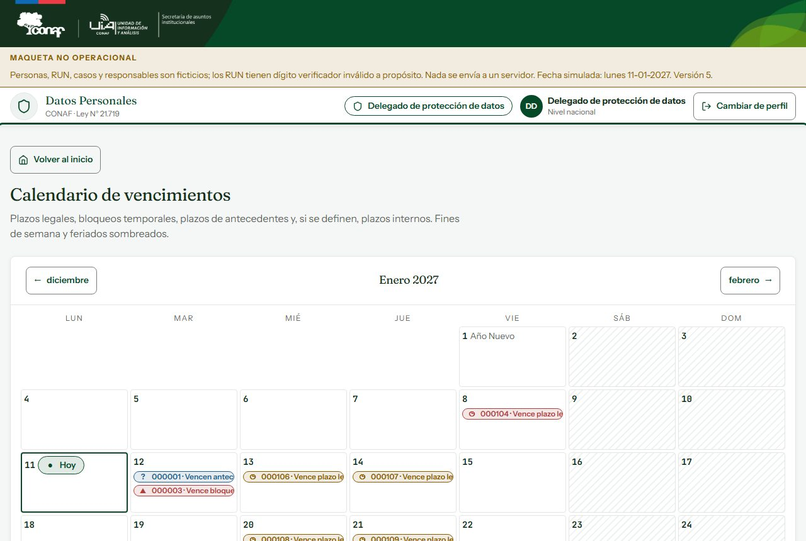
Figura 33. Calendario de vencimientos (vista nacional del delegado).
Los reportes los ven la Unidad Jurídica, para su sede, y el delegado, para todas las sedes. Muestran las cifras del período (ingresadas, cerradas, cerradas en plazo y abiertas vencidas) y su distribución por derecho, vía, sede y estado. «Descargar Excel» genera una planilla de los casos del período sin RUN ni nombres.
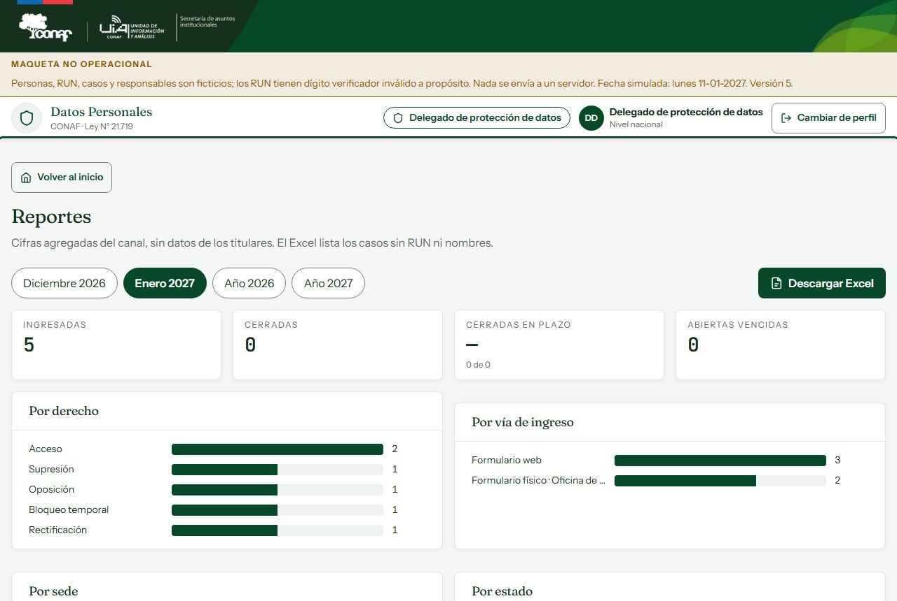
Figura 34. Reportes del canal (vista nacional del delegado).
Anexo A · Estados y etapas del caso
Etapa
Quién actúa
Qué se hace
Estado que se ve
Recepción y registro
Unidad Jurídica
Registra la fecha de ingreso, verifica identidad y representación y acusa recibo
Ingresada · por verificar identidad / Registrada
Admisibilidad
Unidad Jurídica
Resuelve si procede; pide antecedentes
En admisibilidad / Requiere antecedentes / No admitida
Derivación
Unidad Jurídica
Asigna el ámbito que trata los datos
Admisible · por derivar
Análisis y propuesta
Área que trata los datos
Decide y redacta la propuesta
En análisis
Revisión jurídica
Unidad Jurídica
Revisa la propuesta
En revisión jurídica
Firma
Director o directora
Revisa y firma la respuesta (Cero Papel); no deriva
En firma
Respuesta y cierre
Unidad Jurídica
Envía la respuesta, guarda el respaldo y comunica a los cesionarios
Firmada · por enviar / Respondida
En paralelo pueden ocurrir el bloqueo temporal, la prórroga y el reclamo ante la Agencia, todos a cargo de la Unidad Jurídica. El delegado sigue todas las etapas en todas las sedes, sin actuar en ellas.
Anexo B · Plazos
Regla
Plazo
Fuente
Respuesta a la solicitud
30 días corridos desde el ingreso
Art. 11 inc. 2°
Prórroga
Una vez, hasta 30 días corridos
Art. 11 inc. 2°
Bloqueo temporal
2 días hábiles desde la recepción
Art. 11 inc. 6°
Reclamo del titular ante la Agencia
30 días hábiles
Art. 11 y 41 a)
Respuesta de CONAF a un reclamo
30 días corridos, prorrogables
Art. 41 d)
Antecedentes pedidos al titular
5 días hábiles (propuesta)
Sin norma en la ley · por definir con Fiscalía
Plazos internos por etapa
Por definir
Contraparte
Anexo C · Definiciones pendientes
Definición
A quién
Personas reales de cada sede en las cuentas de Unidad Jurídica, Director y Área que trata los datos, y si en Arica el cargo de abogado está vacante
Contraparte
Si en Oficina Central el fiscal recibe y reparte los casos entre los abogados
Fiscalía
Quién registra el formulario físico en la Oficina de Partes de cada región tras la fusión (la maqueta supone que la Unidad Jurídica de la sede)
Contraparte
Portabilidad: formato de entrega, consentimiento de la institución que recibe y cifrado del envío
Fiscalía · Informática
Lectura de las letras a) a f) del art. 14 ter, y publicación del Catálogo de Datos Personales (hoy sin columnas de transferencias internacionales ni de decisiones automatizadas)
Fiscalía · Unidad de Participación Ciudadana y Transparencia
Política y medidas de seguridad (letra e), con el visto bueno del responsable de seguridad de la información
Informática
Si el delegado recibe además alertas por correo
Delegado
Plazo para aportar antecedentes y su efecto en el plazo de respuesta
Fiscalía
Canal disponible desde el 01-12-2026 mientras no exista la integración con Clave Única
Delegado · Informática
Quién administra la plataforma
UIA · Informática
Anexo D · Flujos por perfil
Cada diagrama sigue las acciones que la maqueta ofrece a su perfil. El recuadro verde es un paso del perfil; el punteado, un paso de otro perfil; el rombo, una decisión; el gris redondeado, el cierre del caso.
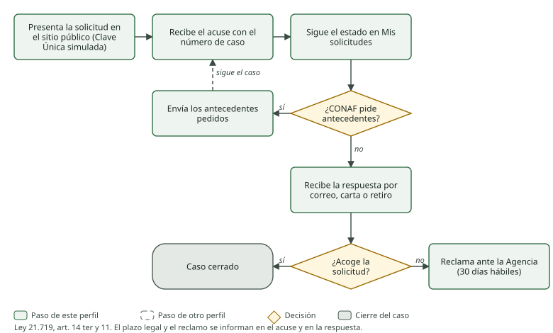
Figura D1. Flujo de la persona solicitante.
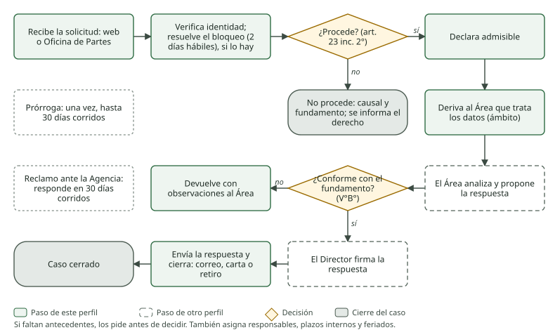
Figura D2. Flujo de la Unidad Jurídica.
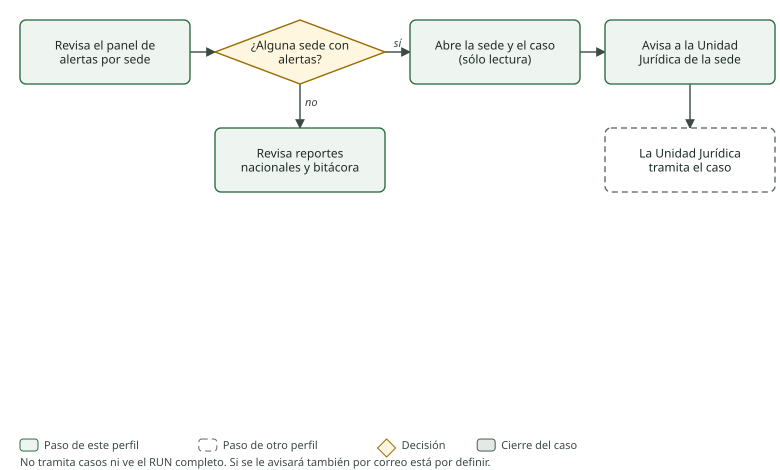
Figura D3. Flujo del Delegado de protección de datos.